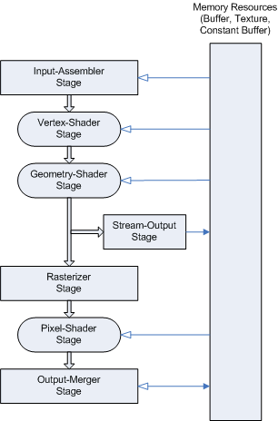

description: The Direct3D 10 programmable pipeline is designed for generating graphics for realtime gaming applications. The following diagram shows the data flow from input to output through each of the programmable stages.
ms.assetid: 3ead6c7c-c7cc-48f1-81d5-b4b67326d610
title: Pipeline Stages (Direct3D 10)
ms.topic: article
ms.date: 05/31/2018
Pipeline Stages (Direct3D 10)
The Direct3D 10 programmable pipeline is designed for generating graphics for realtime gaming applications. The following diagram shows the data flow from input to output through each of the programmable stages.

All of the stages can be configured using the API. Stages featuring common shader cores (the rounded rectangular blocks) are programmable using the HLSL programming language. As you will see, this makes the pipeline extremely flexible and adaptable. The purpose of each of the stages is listed below.
- Input-Assembler Stage - The input-assembler stage is responsible for supplying data (triangles, lines and points) to the pipeline.
- Vertex-Shader Stage - The vertex-shader stage processes vertices, typically performing operations such as transformations, skinning, and lighting. A vertex shader always takes a single input vertex and produces a single output vertex.
- Geometry-Shader Stage - The geometry-shader stage processes entire primitives. Its input is a full primitive (which is three vertices for a triangle, two vertices for a line, or a single vertex for a point). In addition, each primitive can also include the vertex data for any edge-adjacent primitives. This could include at most an additional three vertices for a triangle or an additional two vertices for a line. The Geometry Shader also supports limited geometry amplification and de-amplification. Given an input primitive, the Geometry Shader can discard the primitive, or emit one or more new primitives.
- Stream-Output Stage - The stream-output stage is designed for streaming primitive data from the pipeline to memory on its way to the rasterizer. Data can be streamed out and/or passed into the rasterizer. Data streamed out to memory can be recirculated back into the pipeline as input data or read-back from the CPU.
- Rasterizer Stage - The rasterizer is responsible for clipping primitives, preparing primitives for the pixel shader and determining how to invoke pixel shaders.
- Pixel-Shader Stage - The pixel-shader stage receives interpolated data for a primitive and generates per-pixel data such as color.
- Output-Merger Stage - The output-merger stage is responsible for combining various types of output data (pixel shader values, depth and stencil information) with the contents of the render target and depth/stencil buffers to generate the final pipeline result.
Related topics
Programming Guide for Direct3D 10
Â
Â